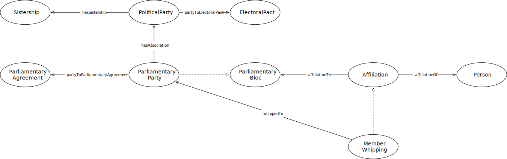

IRI: http://parliament.uk/ontologies/parliamentary-bloc/Affiliation
IRI: http://parliament.uk/ontologies/parliamentary-bloc/ElectoralPact
IRI: http://parliament.uk/ontologies/parliamentary-bloc/MemberWhipping
IRI: http://parliament.uk/ontologies/parliamentary-bloc/ParliamentaryAgreement
IRI: http://parliament.uk/ontologies/parliamentary-bloc/ParliamentaryBloc
IRI: http://parliament.uk/ontologies/parliamentary-bloc/ParliamentaryParty
IRI: http://parliament.uk/ontologies/parliamentary-bloc/Person
IRI: http://parliament.uk/ontologies/parliamentary-bloc/PoliticalParty
IRI: http://parliament.uk/ontologies/parliamentary-bloc/Sistership
IRI: http://parliament.uk/ontologies/parliamentary-bloc/affiliationOf
IRI: http://parliament.uk/ontologies/parliamentary-bloc/hasAssociation
IRI: http://parliament.uk/ontologies/parliamentary-bloc/hasSistership
IRI: http://parliament.uk/ontologies/parliamentary-bloc/partyToElectoralPact
IRI: http://parliament.uk/ontologies/parliamentary-bloc/partyToParliamentaryAgreement
IRI: http://parliament.uk/ontologies/parliamentary-bloc/toParliamentaryBloc
IRI: http://parliament.uk/ontologies/parliamentary-bloc/whippedTo
This HTML document was obtained by processing the OWL ontology source code through LODE, Live OWL Documentation Environment, developed by Silvio Peroni.